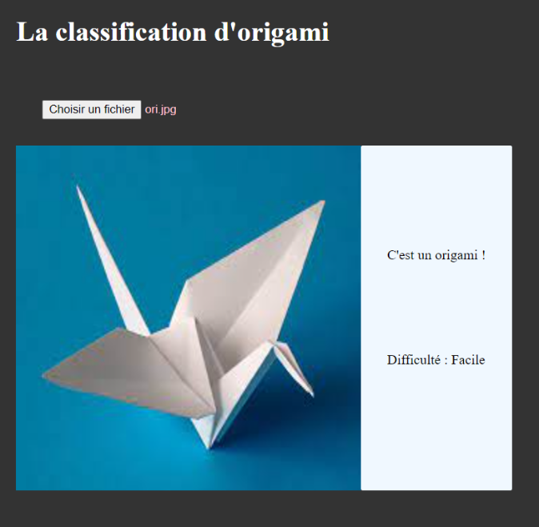
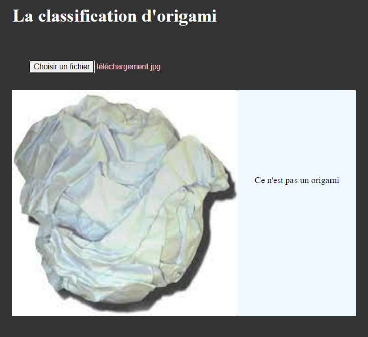

Projet : Classification d'origami
Objectif : Entrainer un modèle à reconnaitre des origamis et estimer leurs difficultés de réalisation


Objectif : Entrainer un modèle à reconnaitre des origamis et estimer leurs difficultés de réalisation
Objectif : Recréer le site WORDLE qui s'inspire du jeu télévisé américain LINGO, MOTUS dans sa version française.